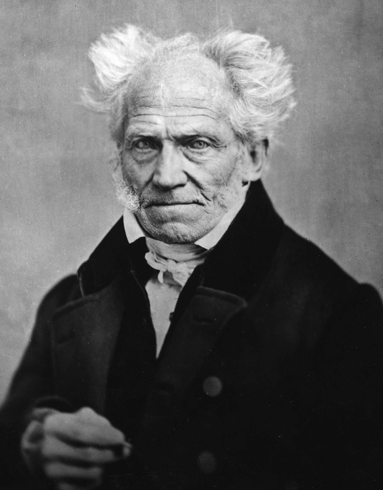

Arthur Schopenhauer

Arthur Schopenhauer
Arthur Schopenhauer (Danzig, 22 de fevereiro de 1788 — Frankfurt, 21 de setembro de 1860) foi um filósofo alemão do século XIX. Ele é mais conhecido pela sua obra principal "O Mundo como Vontade e Representação" (1819), em que ele caracteriza o mundo fenomenal como o produto de uma cega, insaciável e maligna vontade metafísica. A partir do idealismo transcendental de Immanuel Kant, Schopenhauer desenvolveu um sistema metafísico ateu e ético que tem sido descrito como uma manifestação exemplar de pessimismo filosófico. Schopenhauer foi o filósofo que introduziu o pensamento indiano e alguns dos conceitos budistas na metafísica alemã. Foi fortemente influenciado pela leitura das Upanishads, que foram traduzidas pela primeira vez para o latim por Abraham Hyacinthe Anquetil-Duperron, no início do século XIX.
Misantropo, pessimista, solitário, individualista e crítico ferrenho da sociedade, Schopenhauer considerava o amor apenas como vontade cega e irracional que todos os seres têm de se reproduzir, dando assim continuidade à vida e, por conseguinte, ao sofrimento. A sensação de felicidade que o amor traz é apenas o interrompimento temporário do querer, a fuga de uma dor imposta pela vontade. Para Schopenhauer, somente o sofrimento é positivo, pois se faz sentir com facilidade, enquanto que aquilo ao qual chamamos felicidade é negativo, pois é a mera interrupção momentânea da dor ou tédio, sendo estes últimos a condição inerente à existência. Considerava esse impulso de reprodução, esse "gênio da espécie", tão forte como o medo da morte, daí que muitos amantes arriscam a vida e a perdem obedecendo a este desejo. Apesar de ser, nos tempos contemporâneos, mais conhecido pela sua obra magna (O Mundo como Vontade e Representação), foi apenas com a publicação de "Parerga e Paralipomena", no final de 1851, que ficou amplamente conhecido e famoso ainda em vida. Nesta obra o filósofo discorre sobre uma multitude de assuntos que vão desde temas relacionados ao ensino universitário, à escrita, à sociedade em que vive, revê conceitos que outrora defendia e providencia inúmeros conselhos aos leitores sobre como levar uma vida o mais isente de sofrimento possível.
Biografia
Juventude
Arthur Schopenhauer nasceu no dia 22 de fevereiro de 1788, em Danzig (então parte da República das Duas Nações ; atual Gdańsk, Polônia), filho de Johanna Schopenhauer (nascida Trosiener; 1766–1838) e Heinrich Floris Schopenhauer (1747–1805), ambos descendentes de ricas famílias patrícias alemãs. Embora fossem de origem protestante, nenhum deles era muito religioso; ambos apoiaram a Revolução Francesa, eram republicanos e cosmopolitas. Quando Danzig se tornou parte da Prússia em 1793, Heinrich mudou-se para Hamburgo — cidade com uma constituição republicana. Sua empresa continuou negociando em Danzig, onde a maioria de sua família permaneceu. Adele, única irmã de Arthur, nasceu em 12 de julho de 1797.
Em 1797, Arthur foi enviado para Le Havre para viver com a família de um sócio de seu pai, Grégoire de Blésimaire. Ele parece ter gostado de sua estada de dois anos lá, aprendendo a falar francês e formando uma amizade que duraria da vida toda com Jean Anthime Grégoire de Blésimaire. Já em 1799, Arthur começou a tocar flauta.
Em 1803, ele acompanhou seus pais em uma viagem pela Holanda, Grã-Bretanha, França, Suíça, Áustria e Prússia. Visto principalmente como uma viagem de lazer, Heinrich aproveitou a oportunidade para visitar alguns de seus parceiros de negócios no exterior.
Heinrich pediu a Arthur que escolhesse entre ficar em casa e começar os preparativos para a universidade, ou viajar com eles e continuar sua educação mercantil. Arthur escolheu a viagem. Ele arrependeu-se profundamente de sua escolha mais tarde, uma vez que achou o treinamento mercantil muito tedioso. Ele passou doze semanas da turnê frequentando a escola em Wimbledon, onde se desiludiu com a religiosidade anglicana estrita e intelectualmente rasa. Ele continuou a criticar duramente a religiosidade anglicana ao longo de sua vida, apesar de, em geral, ser um tanto anglófilo.
Em 1805, Heinrich morreu afogado em um canal perto de sua casa em Hamburgo. Embora seja possível que sua morte fosse acidental, sua esposa e filho acreditavam que era suicídio. Ele era propenso a ansiedade e depressão, que pioraram com a idade mais velha. Heinrich havia ficado tão agitado que até sua esposa começou a duvidar de sua saúde mental. "Havia, na vida do pai, alguma fonte obscura e vaga de medo, que mais tarde o fez se lançar para a morte do sótão de sua casa em Hamburgo".
Arthur demonstrava um mau humor semelhante durante a juventude e muitas vezes reconheceu que o havia herdado de seu pai. Houve outros casos de histórico grave de saúde mental no lado paterno da família. Apesar de suas dificuldades, Schopenhauer gostava de seu pai e mais tarde se referiu a ele de forma positiva. Heinrich Schopenhauer deixou a família com uma grande herança que foi dividida em três entre Johanna e os filhos. Arthur Schopenhauer teria direito ao controle de sua parte quando atingisse a maioridade. Ele investiu conservadoramente em títulos do governo e ganhou juros anuais que eram mais do que o dobro do salário de um professor universitário. Após abandonar o aprendizado de comerciante, com algum incentivo da mãe, dedicou-se aos estudos no Ernestine Gymnasium, no Ducado de Saxe-Gotha-Altenburg. Enquanto estava lá, desfrutou também da vida social entre a nobreza local, gastando grandes quantias de dinheiro, o que preocupou sua mãe. Ele deixou o ginásio depois de escrever um poema satírico sobre um dos professores. Embora Arthur tenha afirmado que saiu voluntariamente, a carta de sua mãe indica que ele pode ter sido expulso.
Arthur passou dois anos trabalhando como comerciante em homenagem a seu falecido pai. Durante esse tempo, ele teve dúvidas sobre poder começar uma nova vida como acadêmico. A maior parte de sua educação anterior foi como comerciante e ele teve problemas para aprender latim; um pré-requisito para uma carreira acadêmica.
Sua mãe mudou-se com a filha Adele para Weimar - então, o centro da literatura alemã - para aproveitar a vida social entre escritores e artistas. Arthur e sua mãe não se separaram de forma amigável. Em uma carta, ela escreveu: "Você é insuportável e pesado, e muito difícil de conviver; todas as suas boas qualidades são ofuscadas por sua presunção e inúteis para o mundo simplesmente porque você não pode conter sua propensão a encontrar buracos nas outras pessoas." Sua mãe, Johanna, era geralmente descrita como vivaz e sociável. Ela morreu 24 anos depois. Algumas das opiniões negativas de Arthur sobre as mulheres podem estar enraizadas em seu relacionamento conturbado com sua mãe.
Arthur mudou-se para Hamburgo para morar com seu amigo Jean Anthime, que também estudava para se tornar um comerciante.
Vida Adulta
Em 1811, na Universidade de Berlim, assistiu aos cursos dos filósofos Schleiermacher (1768–1834) e Fichte (1762-1814). Este último seria, mais tarde, acusado por Schopenhauer de ter deliberadamente caricaturado a filosofia de Kant (1724–1804), tentando “envolver o povo alemão com a neblina filosófica”. Em 1813, Schopenhauer doutorou-se pela Universidade de Berlim com a tese Sobre a Quádrupla Raiz do Princípio de Razão Suficiente.
Nessa época, sua mãe, Johanna Schopenhauer, estabeleceu-se em Weimar, onde começou a obter progressivo sucesso como novelista e passou a frequentar os círculos mundanos que Schopenhauer detestava e se esforçava por ridicularizar ao máximo. As relações entre os dois deterioraram-se a ponto de Johanna declarar publicamente que a tese de seu filho não passava de um tratado de farmácia; em contrapartida, Schopenhauer afirmava ser incerto o futuro de sua mãe como romancista e que ela somente seria lembrada no futuro pelo fato de ser sua progenitora.
Apesar dessas brigas, Schopenhauer frequentou durante algum tempo o salão de sua mãe. Ali tornou-se amigo de Goethe (1749–1832), que reconhecia seu gênio filosófico e sugeriu-lhe que trabalhasse numa teoria antinewtoniana da visão. A partir dessa sugestão, Schopenhauer escreveu Sobre a Visão e as Cores, publicado em 1816.
Em 1814, Schopenhauer rompeu definitivamente com a família e, quatro anos depois, concluiu sua principal obra, O Mundo como Vontade e Representação. Em 1819, o livro foi publicado, mas após um ano e meio tinham sido vendidos apenas cerca de 100 exemplares. A crítica também não foi favorável à obra.
Durante os anos de 1818 e 1819, Schopenhauer passou uma temporada na Itália: ao voltar, sua situação econômica não era das melhores. Solicitou então um posto de monitor na Universidade de Berlim, valendo-se de seu título de doutor e passando por uma prova que consistia numa conferência. Admitido em 1820, encarregou-se de um curso intitulado A Filosofia Inteira, ou O Ensino do Mundo e do Espírito Humano. O título do curso devia-se, provavelmente, a Hegel (1770-1831), que na época era um dos mais reputados professores da Universidade de Berlim. Tentando competir com Hegel, Schopenhauer escolheu o mesmo horário utilizado pelo rival, mas a tentativa redundou em fracasso completo: apenas quatro ouvintes assistiam a suas aulas. Ao fim de um semestre, renunciou à universidade.
Em 1821, envolveu-se em um acidente que teve desagradáveis consequências econômicas e, sobretudo, viria causar-lhe periódica crise de depressão psicológica. Nessa época, o filósofo residia numa pensão, cujos principais locatários, em sua grande maioria, eram senhoritas de idade avançada. Essas pensionistas tinham o desagradável hábito de espionar a chegada de supostas amantes, recebidas por Schopenhauer em seus aposentos. Certa noite, quando uma costureira chamada Caroline-Louise Marquet dedicava-se a esse mister, Schopenhauer, perdendo a paciência, atirou-a escada abaixo. Como resultado, foi processado e acabou sendo condenado a pagar trezentos thalers de despesas médicas. Além disso, ficava obrigado a pagar sessenta thalers anuais, até a morte de Caroline, que somente morreu vinte anos depois. Durante todo esse tempo, Schopenhauer entrava em depressão nervosa, uma vez por ano, todas as vezes que era obrigado a pagar a pensão. Sua revolta dizia respeito menos à quantia desembolsada do que àquilo que sentia como injustiça cometida pelas autoridades.
Entre 1826 e 1833, Schopenhauer empreendeu frequentes viagens, adoeceu por diversas vezes e tentou uma segunda experiência como professor da Universidade de Berlim. Foi mais uma tentativa fracassada, somente contrabalançada pela crítica elogiosa a seu O Mundo como Vontade e Representação, publicada no periódico Kleine Bücherschau.
Em 1833, depois de muitas hesitações, o filósofo resolveu fixar-se em Frankfurt, onde permanecera até sua morte em 1860. Durante os vinte e sete anos que passou na cidade, levou uma vida solitária, acompanhado por seu cão. Sua predileção por animais era filosoficamente justificada; segundo Schopenhauer, entre os cães, contrariamente ao que ocorre entre os homens, a vontade não é dissimulada pela máscara do pensamento.
Dedicado exclusivamente à reflexão filosófica, Schopenhauer trabalhou intensamente em Frankfurt, redigindo e publicando diversos livros. Em 1836, veio a lume o ensaio Sobre a Vontade na Natureza, que deveria completar o segundo livro de O Mundo como Vontade e Representação. Na mesma época, redigiu também dois ensaios sobre moral. O primeiro, escrito para concorrer a um concurso da Academia de Ciências de Trondheim (Noruega), intitula-se Sobre a Liberdade da Vontade. O segundo, O Fundamento da Moral, concorreu ao concurso da Academia de Copenhague e continha verdadeiros insultos a Hegel e a Fichte, que provocaram escândalo; embora fosse o único concorrente, o livro não foi premiado. Posteriormente, os dois ensaios seriam reunidos sob o título de Os Dois Problemas Fundamentais da Ética e publicados em 1841. Três anos depois, surgiu a segunda edição de O Mundo como Vontade e Representação, enriquecida com alguns suplementos. Apesar disso, não teve sucesso.
O mesmo não ocorreu com a última obra escrita e publicada por Schopenhauer. Intitulava-se Parerga e Paralipomena e continha pequenos ensaios sobre os mais diversos temas: política, moral, literatura, filosofia, estilo e metafísica, entre outros. A obra alcançou inesperado sucesso, logo depois de ser publicada em 1851. A partir daí, a notoriedade do autor espalhou-se pela Alemanha e depois pela Europa. Um artigo de Oxford, publicado na Inglaterra, deu início à grande difusão de sua filosofia. Na França, muitos filósofos e escritores viajaram até Frankfurt para visitá-lo. Na Alemanha, a filosofia de Hegel entrou em declínio e Schopenhauer surgiu como ídolo das novas gerações.
Assim, os últimos anos da vida de Schopenhauer proporcionaram-lhe um reconhecimento que ele sempre buscou. Artigos críticos surgiram em grande quantidade nos principais periódicos da época. A Universidade de Breslávia dedicou cursos à análise de sua obra e a Academia Real de Ciências de Berlim propôs-lhe o título de membro, em 1858, que ele recusou.
Dois anos depois, a 21 de setembro de 1860, Arthur Schopenhauer, que Nietzsche (1844 – 1900) chamaria "o cavaleiro solitário", morreu, vítima de insuficiência cardíaca. Contava, então, com 72 anos de idade.
Ideias
As ideias de Schopenhauer consistem em uma coletânea de pensamentos ditos pessimistas que dizem respeito à vida humana. Segundo o filósofo, esta é regida pela vontade e, sendo, a vontade, uma espécie de Deus presente em todos os humanos sem exceção, a qual necessita de sobreviver valendo-se do desejo sexual para se reproduzir e multiplicar, e devido ao desejo de sempre querer mais, a vontade acaba levando ao sofrimento humano, pois o homem nunca será satisfeito com uma única coisa. Ainda, uma vez que a Vontade é tida como a coisa-em-si/essência do ser humano, e em razão do fato de o homem ser, do ponto de vista cósmico, não mais que um tipo de ser em meio a vários outros tipos de seres, Schopenhauer, valendo-se de uma razão analógica, sente-se autorizado a estender essa substância primordial (a Vontade) a todos os demais seres, concebendo-a, assim, como essência não só do homem, mas do mundo.
Schopenhauer procura uma forma de libertação dessa vontade se baseando em escritos budistas e na filosofia oriental, que diz que a única forma de se libertar da vontade é a total renúncia de todos os desejos, a qual resulta no Nirvana. Vale a pena acrescentar que Schopenhauer também identifica esse mecanismo da libertação da vontade no cristianismo genuíno. De todo modo, a sabedoria religiosa que tem por referência é o budismo.